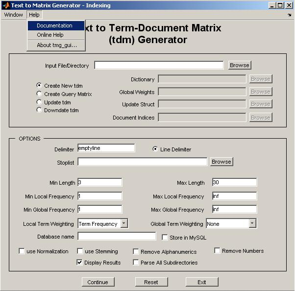

Indexing Module (tmg_gui)
|
|

-
In order to update a tdm, give the "input file/directory" and the update_struct corresponding to the initial collection. In case you just want to alter some options, give a blank "input file/direcory" and change the corresponding fields of update_struct.
-
In order to downdate a tdm, give the update_struct corresponding to the initial collection and the document indices vector you want to remove.
-
In order to construct a term-query matrix, give the dictionary char array of the initial collection and the corresponding vector of global weights (optional).
|
|
Return to main page
Start Page
|